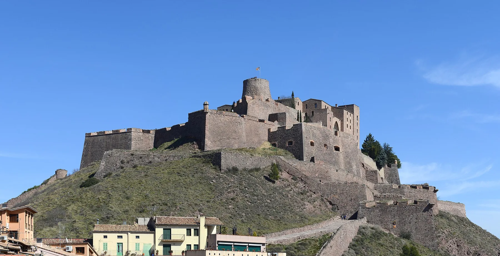

Geografia i Història · 2n ESO · La societat feudal
Qui manava al castell?
Per què els pagesos obeïen el senyor feudal? Avui ho investigarem amb fonts de l'època, com fan els historiadors.
1 · Observo → dedueixo
Llegeix el feu

Germans Limbourg, Les Très Riches Heures du duc de Berry, octubre (c. 1412–1416). Domini públic.
Toca els números. Primer digues què hi veus; després, què en dedueixes.
2 · Connecto
Qui dona i qui rep?
Si el pagès dona tant, per què no marxa? Què li faltaria si ho fes?
Paraula clau: feuTerra que un senyor dona a un vassall a canvi de fidelitat.
3 · Observo → dedueixo
Mans dins de mans

Liber feudorum maior (c. 1192), Arxiu de la Corona d'Aragó. CC BY-SA 4.0.
Toca els números. Qui és més important? Com ho saps sense llegir res?
4 · Canvi i continuïtat
L'any del pagès


Què passa amb tota la feina d'un any si plou massa o si hi ha guerra?
5 · Dedueixo
On va la collita?
Tria un color i toca els sacs: 1 de delme, 3 per al senyor, 2 de llavor. Xifres d'exemple per pensar.
Queden 10 sacs per menjar tot l'any.
6 · Argumento
Els mals usos: és just?
Votem: eren justos?
7 · Situo en el temps
Del romànic a la llibertat dels remences
Quina relació hi ha entre la Pesta Negra (1348) i la revolta dels remences (1462)?
8 · Explico
Construïm l'explicació
1 · Afirmació
2 · Prova
3 · Raonament
Tria una peça de cada columna. Quina combinació s'aguanta millor?
9 · Com he après?
Mirem enrere
Ho sé explicarAmb ajudaEncara no